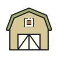
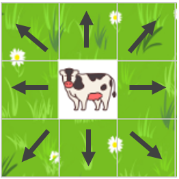
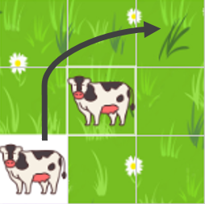

Ходов: 26
Переместите всех коровок домой  за наименьшее количество ходов.
Коровки перемещаются по одной. После каждого хода счетчик увеличивается.
 За один ход коровка может перейти на одну свободную ячейку в любом направлении.
 Коровка может перепрыгнуть через соседнюю коровку на свободную ячейку.
Очень позодрительно, но молодец!